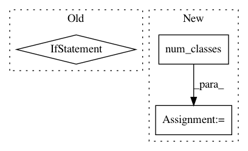

fd5fdd2507cb26d746324ae7bfd6c280580dd5e6,src/predict.py,,,#,124
Before Change
elif mode == "opencv":
pred_final = predict_opencv(segmenter, imfile, h=dh, w=dw)
// res = cv2.imwrite(out_file, pred_final)
elif mode == "skimage":
pred_final = predict_skimage(segmenter, imfile, h=dh, w=dw)
// res = io.imsave(out_file, pred_final)
// break
After Change
dw = 480
dh = 480
dataset = datasets.load(dataset_name=dataset_name)
nc = dataset.num_classes()
if K.backend() == "tensorflow":
print("Tensorflow backend detected; Applying memory usage constraints")
ss = K.tf.Session(config=K.tf.ConfigProto(gpu_options=K.tf.GPUOptions(allow_growth=True)))
In pattern: SUPERPATTERN
Frequency: 4
Non-data size: 3
Instances
Project Name: PavlosMelissinos/enet-keras
Commit Name: fd5fdd2507cb26d746324ae7bfd6c280580dd5e6
Time: 2017-05-04
Author: pmelissi@iti.gr
File Name: src/predict.py
Class Name:
Method Name:
Project Name: PavlosMelissinos/enet-keras
Commit Name: d5f386ee8b68b01e77278f2b318de3aebbc55373
Time: 2017-10-04
Author: pmelissi@iti.gr
File Name: src/experiments/core.py
Class Name: Experiment
Method Name: model
Project Name: fizyr/keras-retinanet
Commit Name: 1660df5e62a6dc05f1feb4774a07c4a464ae343d
Time: 2018-01-31
Author: j.c.gaiser@delftrobotics.com
File Name: keras_retinanet/bin/debug.py
Class Name:
Method Name: run
Project Name: galeone/dynamic-training-bench
Commit Name: f811dff6fc1cf0e0ebcfb3db7dd28d7f265c5cbb
Time: 2017-01-20
Author: nessuno@nerdz.eu
File Name: evaluate.py
Class Name:
Method Name: